VOC 기반
위젯 UX 개선
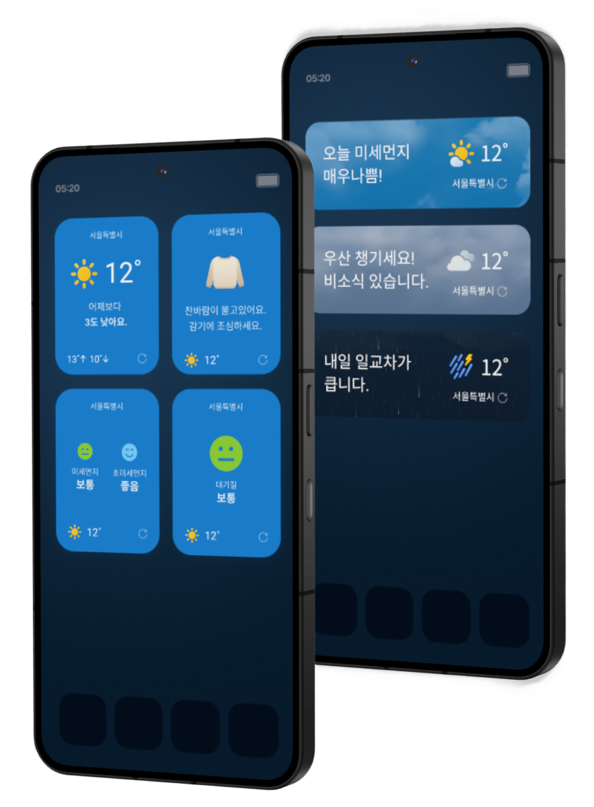
상세 화면 진입 전,
위젯에서 이탈이 발생하고 있었습니다.
위젯은 매일 노출되는 홈 화면 접점이자, 탭 한 번으로 광고 화면까지 이어지는 경로입니다.
그런데 설치 사용자의 62%가 위젯을 삭제하고, 남은 사용자의 절반만 상세 화면에 도달했습니다.
상세 화면 진입으로 광고 수익을 올릴 기회를 놓치고 있었습니다. 위젯을 유지하지 않고 이탈하는 지점을 붙잡고,
상세 화면까지 이어질 이유를 만드는 것을 이 프로젝트의 출발점으로 삼았습니다.
위젯 삭제 VOC를 분석해보니
정보 부족이 주요 원인이었습니다.
위젯 관련 VOC를 세 카테고리로 분류하고,
삭제 로그와 교차해 어떤 요청이 지표에 닿는지 확인했습니다.
Q1. 사용자는 어떤 정보를 요청했을까?
Q2. 삭제 이유는 어디에 몰려 있을까?
수익을 회복하기 위해
매일 켜 둘 이유를 설계했습니다.
VOC에서 확인한 세 가지 문제를 개선 과제로 정리하고, 각 과제별 목표와 지표를 정했습니다.
요청 비중 78%를 차지한 생활 정보를 위젯에서 바로 제공하면,
매일 확인하는 습관이 생겨 위젯 DAU가 높아질 것이다.
- 목표
- 20% ↑
- 지표
- 위젯 DAU
예보는 요약하고 상세 정보는 앱에서 제공하면,
상세 정보를 확인하려는 사용자의 진입이 늘어날 것이다.
- 목표
- 20% → 25%
- 지표
- 상세 진입율
요청 비중은 8%로 가장 낮았지만 삭제 행동과 직결되어
배경과 폰트설정을 개선하면 삭제율이 낮아질 것이다.
- 목표
- 62% → 50%
- 지표
- 위젯 삭제율
기온 숫자 대신,
체감 정보로 확장
날씨를 확인하는 목적은 기온 자체를 보는 것이 아니라,
오늘 무엇을 입고 어떻게 움직일지 판단하기 위해서라고 보았습니다.
그래서 단순한 기온 수치보다 생활 맥락이 담긴 정보를 우선하고,
필요한 정보는 직접 선택할 수 있는 구조로 확장했습니다.
- 01기온만으로는 부족한 날씨 정보
- 02한정된 정보만 노출되는 단일 구조
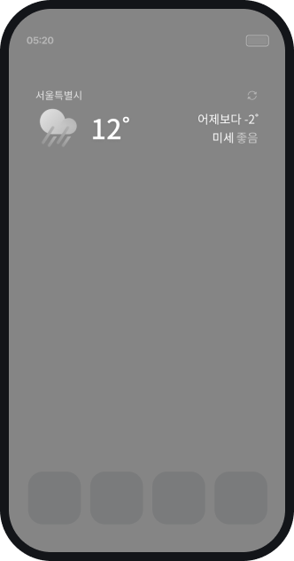
-
01
숫자에 맥락을 더한 체감 정보
"어제보다 3도 낮아요"처럼 기온을 생활 언어로 바꿔 오늘의 날씨를 직관적으로 이해할 수 있게 했습니다.
-
02
필요한 정보를 선택하는 구조
기온 하나로 끝나던 구성에서 벗어나, 미세먼지·대기질·옷차림 등 체감할 수 있는 정보로 선택지를 넓혔습니다.
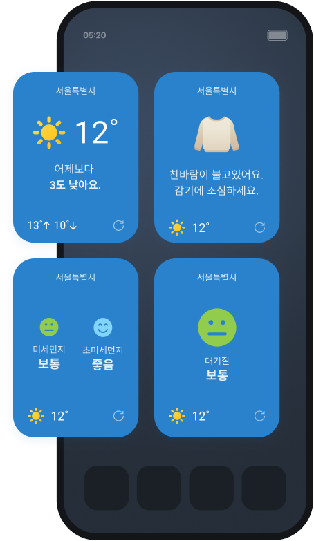
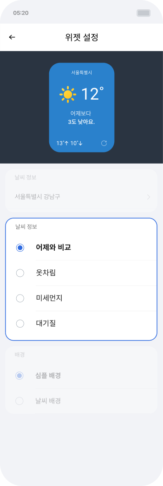
한 문장으로
상세가 궁금해지도록
위젯에서 모든 정보를 보여주기보다, 시간대에 맞는 핵심 정보만 전달해
다음 정보를 확인할 이유를 만들었습니다. 그래서 시간에 따라 한마디를 바꾸고,
자세한 정보는 상세 화면에서 이어서 확인할 수 있게 구성했습니다.
- 01날씨 변동이 적은 날엔 멈춰 보이는 위젯
- 02정보가 완결되어 더 알아볼 이유 없음
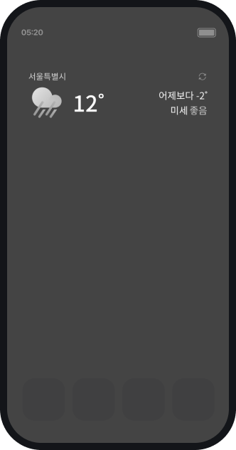
-
01
시간대마다 바뀌는 한마디
아침·오후·밤 문구를 교체해, 날씨 변동이 없는 날에도 위젯이 멈춰 보이지 않게 했습니다.
-
02
끝까지 말하지 않는 요약
"비 와요"까지만 알려주고 언제·얼마나는 남겨, 사용자가 스스로 열게 했습니다.
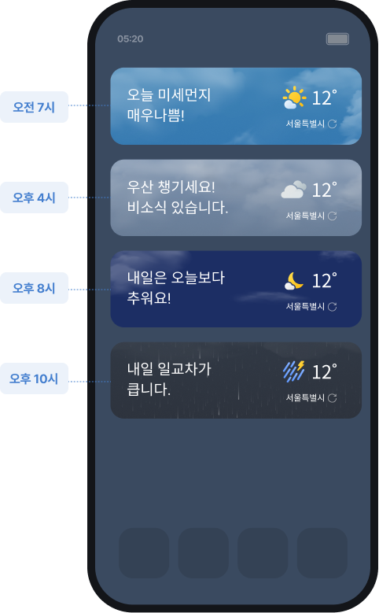
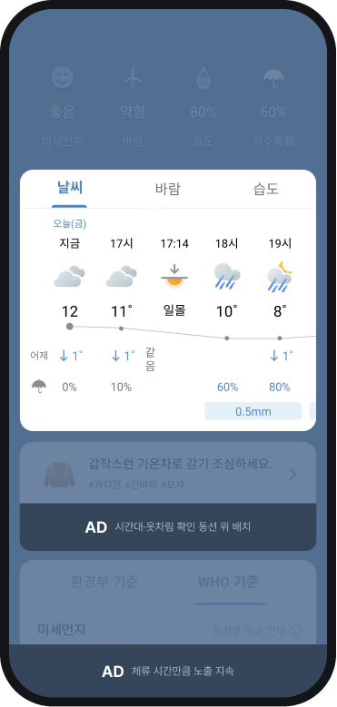
배경에 맞춰
읽기 쉬운 위젯
요청 비중은 8%로 가장 낮았지만,삭제 행동과 직접 연결된 문제였습니다.
그래서 배경과 글자색을 직접 조절할 수 있도록 해 가독성 문제를 해결했습니다.
- 01배경 이미지와 겹쳐 정보가 묻힘
- 02글씨를 키우면 레이아웃이 깨짐
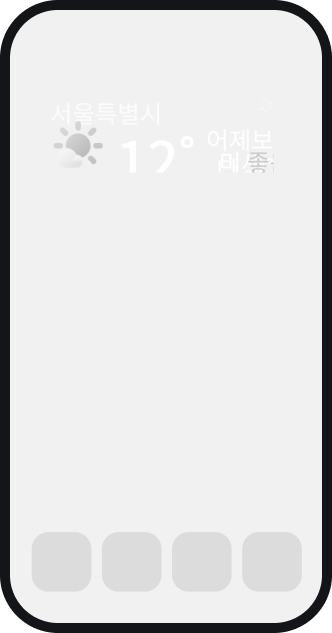
-
01
직접 맞추는 배경과 글자색
배경 3종과 투명도·폰트 컬러를 직접 고르게 해, 어떤 홈 화면에서도 정보가 묻히지 않게 했습니다.
-
02
글씨를 키워도 버티는 레이아웃
시스템 폰트를 확대해 쓰는 사용자를 고려해 핵심 수치를 크게 강조하고, 최소 14px을 유지했습니다.
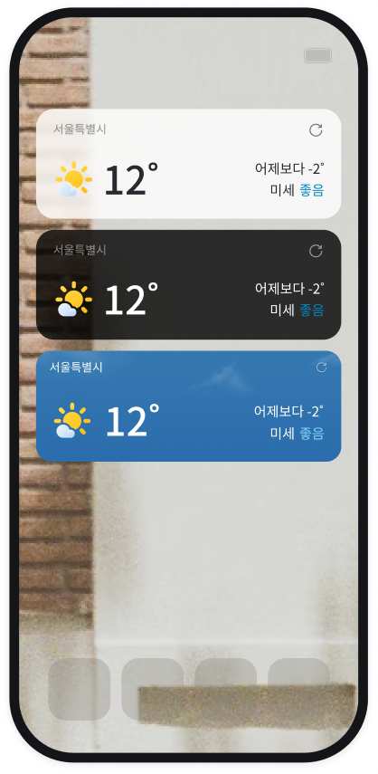
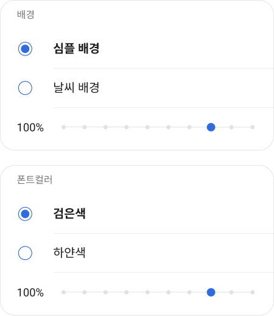
최종 위젯 10종
배너형·소형·중형·대형·세로형으로 나누어,
사용 목적과 홈 화면 여백에 맞는 날씨 확인 경험을
제공했습니다.
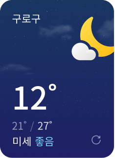
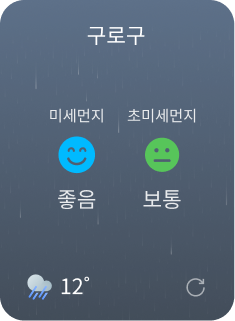
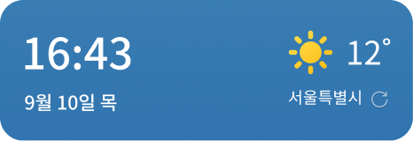
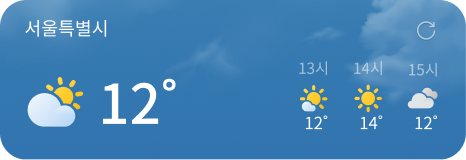
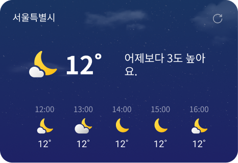
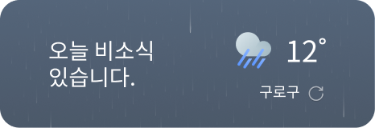
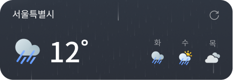
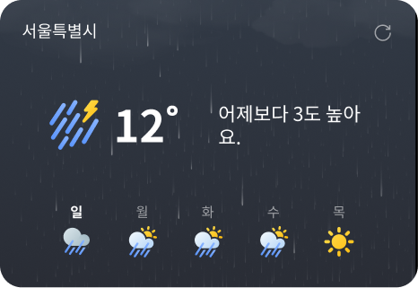
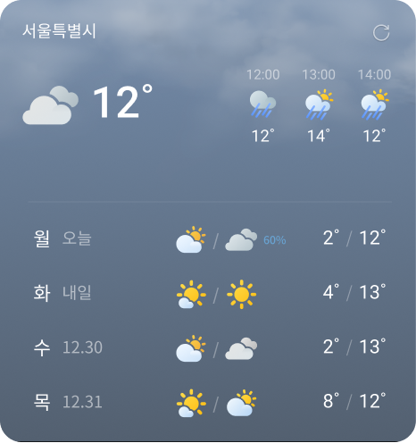
측정 · 릴리즈 후 28일
10% 단계 배포 후 100% 확대 기준
위젯 DAU
목표 20% ↑ 대비 초과 달성
상세화면 광고 수익
상세 진입율 4.8%p ↑ 에 따른 지면 노출 증가
위젯 삭제율
62%에서 40%로 감소
VOC의 표면 수치가 아닌
삭제 행동에서 원인을 찾다.
삭제 행동과 교차 분석하니 진짜 이탈 원인이 보였습니다.
숫자가 아닌 행동 맥락을 읽는 것이 시작이었습니다.
사용자 불편 해소가 곧
수익 구조로 이어졌다.
UX 개선 → DAU 상승 → 광고 수익 증가. UX와 수익을
하나의 흐름으로 연결하는 것이 프로덕트 디자이너의
역할임을 확인했습니다.
세 가설을 동시에
검증한 한계가 있었다.
세 솔루션을 한 번에 릴리즈해 각 개선이 지표에 얼마나
기여했는지는 분리하지 못했습니다. 이후에는 지표별로
배포 시점을 나눠 원인을 좁힐 수 있도록 설계하고 있습니다.